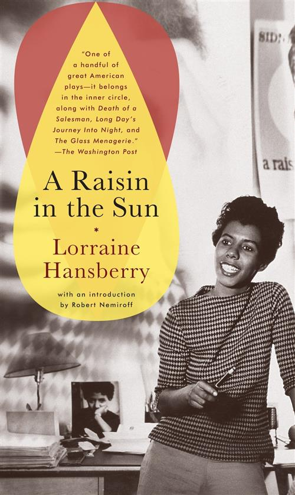
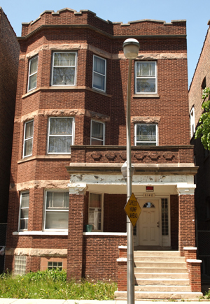
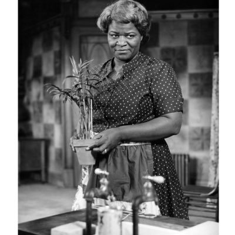
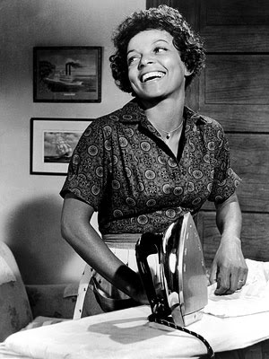

A Raisin in the
Sun
Author/Playwright:
Lorraine Hansberry

A Raisin in the Sun was the first play in America about
an average American Black family. Also, the first play written by a
black woman to appear on Broadway.

This is the Hansberry home in Chicago
The play is semi-autobiographical.
Born on Chicago’s Southside. The Hansberry family moved to a
white suburb when she was eight. Angry whites gathered in front of
their house. A brick was thrown through the window that
narrowly missed her. The police were unwilling to protect the
family. Later the State Supreme Court ordered the family out
of the house. Lorraine Hansberry died in 1963, at age 34 from
pancreatic cancer.
The Setting
Urban-the city of Chicago
The Slums of Chicago, Illinois
Southside of Chicago
Ghetto-a part of a city, poor, segregated by
race/religion
1950’s


The Younger Family Apartment
- Family of 5
- 2 Bedrooms
- No Private Bathroom
- Several families share a bathroom in the
hallway
- Central Room (Kitchen, Living Room, Travis’ Bedroom,
sleeps on the couch)
- No Privacy, Crowded
CHARACTERS
Walter Younger,
Senior
- Has just died
- Had a $10,000 life insurance policy
- Source of sudden wealth for the family
- Source of Conflict
- Never actually seen in the play

Lena
Younger-Mama
- Very religious
- Very Moral (disapproves of alcohol and
gambling)
- Family Oriented
- Her dream: a home for her family
- Works as a housekeeper
- The matriarch of the Younger Family

Walter Lee
Younger
- Mama’s son
- Works as a chauffeur-drives a car for a wealthy white
man
- Married, has 1 son
- Dream: to own a business, be his own boss, financial
independence
- Dreams t be the PATRIARCH of the Younger
family

Ruth
Younger
- Walter’s wife
- Finds out she is pregnant
- Considering an illegal abortion
- Dream: a happy family
- Works as a laundress
Beneatha
Younger
- College Student
- Walter’s sister
- Torn between cultures (black and white)
- Dream: a college education
- Tired of being an “assimilationist” acting the way
white people want black people to be
Travis
Younger
- Walter Lee and Ruth's
son
- He represents the future of
the Younger family

Act
1:1
The play opens in the
Younger Family apartment.

All of the main characters
are introduced.
PURPOSE OF ACT
1
- Black families are just
like white familes
- They get up in the
morning
- use the
bathroom
- eat
breakfast
- get ready for work or
school.
- Establish that the Youngers
are POOR
- Apartment is very
small
- furniture is worn
out
- very clean and well
maintained
- 5 people share a 1 bedroom
apartment
- Ruth and Walter sleep in
the bedroom
- Mama and Bennie share the
dining area
- Travis sleeps on the
couch
- There is no bathroom in the
apartment
- The family must share a
bathroom in the hallway with other families
- Travis asks for money for
school, family really does not have extra
money
- Ruth does not feel
well
- Ruth is pregnant and
worried
- Ruth is secretly
considering an abortion
- Walter does not realize his
wife is pregnant
- Mama is thrilled, there
will be another baby
- Bennie is upset, the
apartment is too small and crowded, Where are they going to put a
baby?
- ABORTION: HIGHLY
CONTROERSIAL TOPIC IN THE PLAY
- Illegal in the United States in the
1950's
- Legalized in the USA in January 1973
- Supreme Court Case: Roe vs. Wade